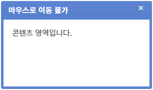
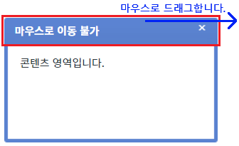
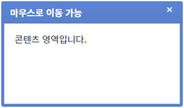
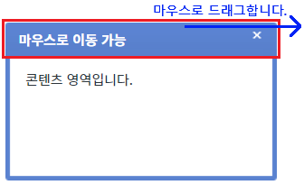

FloatingLayer의 'fixed' 속성을 사용하여 컴포넌트의 위치를 고정한 예제입니다. 이 속성을 'true'로 설정하면 사용자가 타이틀 영역을 마우스로 드래그하여 팝업을 이동시킬 수 없습니다. 마우스로 드래그를 할 수 있는 영역은 'FloatingLayer'의 테두리 영역(상하좌우)으로 배경색이 설정되어 있습니다.
설정에 따른 동작은 다음과 같습니다. - "false" : [default] 위치를 고정하지 않습니다. 사용자가 마우스로 드래그하여 위치를 이동시킬 수 있습니다. - "true" : 위치를 고정합니다. 사용자가 마우스로 드래그하여 위치를 이동시킬 수 없습니다.
- 'FloatingLayer'의 위치는 절대 값으로(display:absolute) 콘텐츠의 길이에 따라 위치가 변경되지 않습니다.
- 이 예제는 마우스 사용이 가능한 환경에서 정상 동작합니다.
위치 고정하기
위치 고정하지 않기
1
STEP 1: 위치가 고정된 'FloatingLayer'를 표시합니다.
예제 영역 '위치 고정하기'의 '1.1 FloatingLayer 표시하기' 버튼을 클릭합니다.
2
STEP 2: 실행된 결과를 확인합니다.
'FloatingLayer'가 버튼 하단에 표시됩니다. 타이틀은 '마우스로 이동 불가'입니다.
Image 1.브라우저(Chrome) 실행 예시

3
STEP 3: 타이틀 영역을 마우스로 드래그하여 위치를 이동시킵니다.
Image 2.브라우저(Chrome) 실행 예시

4
STEP 4: 실행된 결과를 확인합니다.
위치가 이동되지 않습니다.
1
STEP 1: 위치를 고정하지 않은 'FloatingLayer'를 표시합니다.
예제 영역 '(기본 설정) 위치 고정하지 않기'의 '2.1 FloatingLayer 표시하기' 버튼을 클릭합니다.
2
STEP 2: 실행된 결과를 확인합니다.
'FloatingLayer'가 버튼 하단에 표시됩니다. 타이틀은 '마우스로 이동 가능'입니다.
Image 3.브라우저(Chrome) 실행 예시

3
STEP 3: 타이틀 영역을 마우스로 드래그하여 위치를 이동시킵니다.
Image 4.브라우저(Chrome) 실행 예시

4
STEP 4: 실행된 결과를 확인합니다.
위치가 이동됩니다.
1
속성을 정의합니다.
[필수] fixed="옵션 값"
(옵션 설명)
- false : [default] 위치를 고정하지 않습니다. 사용자가 마우스로 드래그하여 위치를 이동시킬 수 있습니다.
- true : 위치를 고정합니다. 사용자가 마우스로 드래그하여 위치를 이동시킬 수 없습니다.
fixed